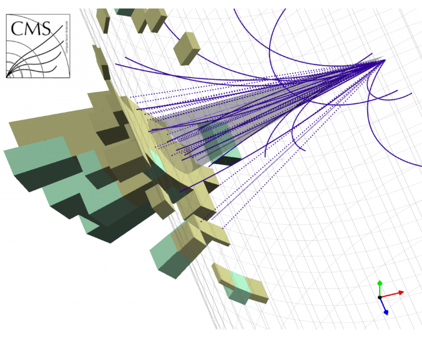
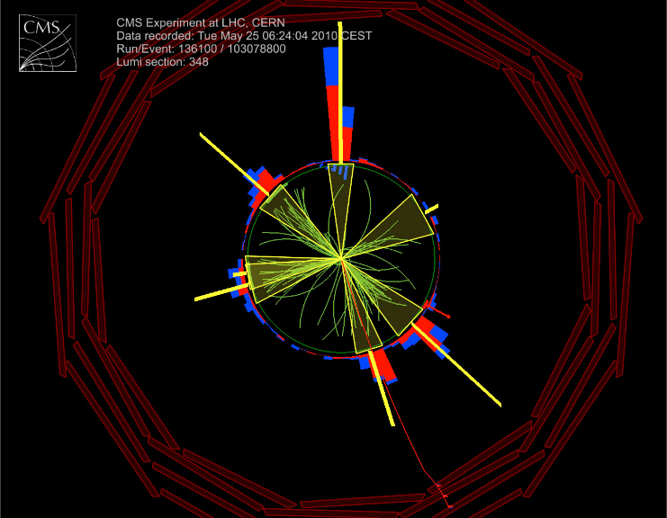
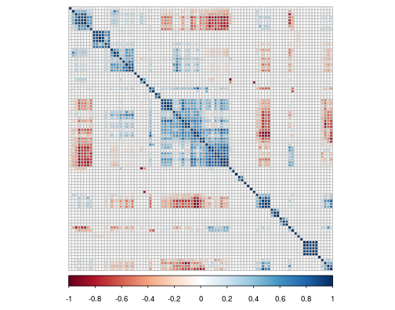
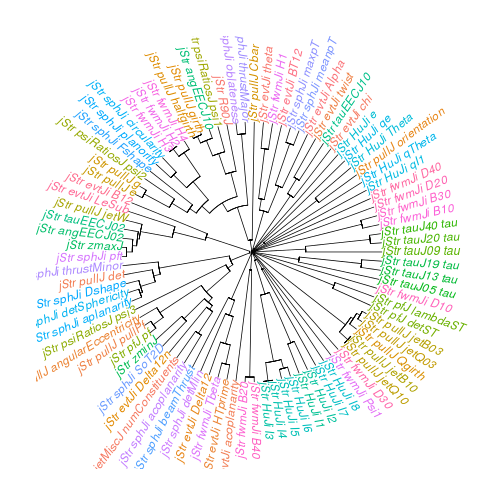
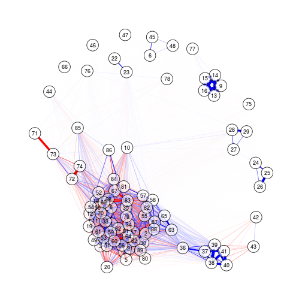
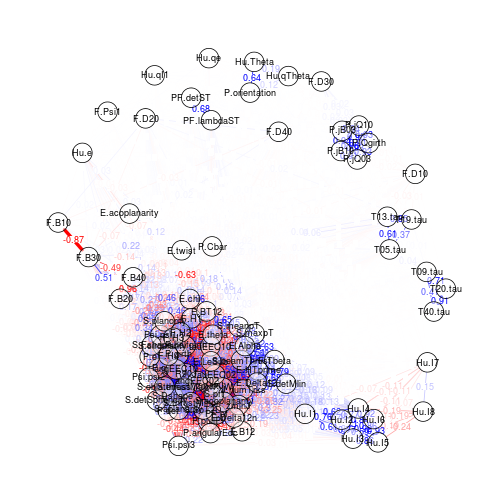
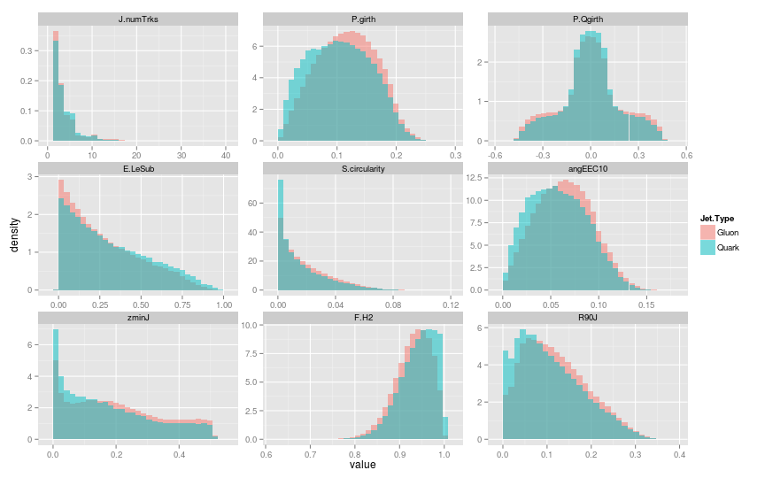

Machine learning for particle physics using R
Andrew John Lowe
Wigner Research Centre for Physics,
Hungarian Academy of Sciences
Introduction: about this talk
- I'm a particle physicist, physicist programmer, and aspiring data scientist
- Worked for 10 years on the development of core software and algorithms for a multi-stage cascade classifier that processes massive data in real-time\(^*\)
- I'm not a machine learning expert \(-\) yet
- Nevertheless, switching to R has made it easier for me to ask more complex questions from my data than I would have been able to otherwise
- This is a walk-through of an ongoing analysis that I am performing entirely in R
- Computing power was limited to my own laptop
What is particle physics?
- The study of subatomic particles and the fundamental forces that act between them
- Present-day particle physics research represents man's most ambitious and organised effort to answer the question: What is the universe made of?
- We have an extremely successful model that was developed throughout the mid to late 20th century
- But many questions still remain unanswered
- Doesn't explain: gravity, identity of dark matter, neutrino oscillations, matter/antimatter asymmetry of universe ...
- To probe these mysteries and more, we built the Large Hadron Collider
The Large Hadron Collider (LHC)

Example detector at the LHC

The "Periodic Table" of particles

This talk focuses on the identification of light quarks (ignoring the heavy types) and gluons
The "Periodic Table" of particles

This talk focuses on the identification of light quarks (ignoring the heavy types) and gluons
What is a jet?
- For complex reasons (quantum chromodynamics! 😱) that will not be described here, quarks and gluons are not observed individually
- Instead, we can only measure their decay products
- What we observe is a cone-shaped spray of particles called a jet
- The measured particles are grouped together by a jet algorithm
- Several different approaches and algorithms exist, but the most popular are sequential recombination algorithms (hierarchical agglomerative clustering)
- Somewhat similar to the k-means algorithm
Conceptual picture

Jets are viewed as a proxy to the initial quarks and gluons that we can't measure and are a common feature in high-energy particle collisions
A jet seen by the CMS detector

Charged particle tracks and reconstructed jet cone
A six-jet event seen by CMS

View along detector beam axis
A two-jet event seen by ATLAS

View down beam axis, side view, and an "unrolled" detector visualisation showing two big energy peaks
The problem in a nutshell
- Beams of energetic protons collide inside our detector
- Quarks and gluons emerge and decay into collimated sprays of particles
- Algorithms cluster these decay products into jets
- For each jet, we'd like to know what initiated it
- Was it a Quark? Or a Gluon?
- Being able to accurately discriminate between quark- and gluon-initiated jets would be an extremely powerful tool in the search for new particles and new physics
- This is an archetypal classification problem that might be amenable to machine learning
Machine learning
& particle physics
- Machine learning is more or less what is commonly known in particle physics as multivariate analysis (MVA)
- Used for many years but faced widespread scepticism
- Use of multivariate pattern recognition algorithms was basically taboo in new particle searches until recently
- Much prejudice against using what were considered "black box" selection algorithms
- Neural nets and Fisher discriminants used somewhat in the 1990's
- Boosted Decision Trees (AdaBoost, 1996) is the favourite algorithm used for many analyses (1st use: 2004)

- For experimental particle physics, ROOT is the ubiquitous data analysis tool, and has been for the last 20 years old
- Command language: CINT ("interpreted C++") or Python
- Small data: work interactively or run macros
- Big data: compile with ROOT libraries, run on Grid
- Data format optimised for large data sets
- Complex algorithms are difficult to do interactively
- End up writing huge C++ programs
- Lots of tweaking, endless edit-compile-run loops
- The best choice for prototyping new methods?
On C++ and data analysis
- Is C++ a good choice for data analysis?
- Spend days coding something that runs in minutes or
- Write something in a couple of hours that will run during your lunch break?
- Which will get you your answer faster? What strategy will help you define where you should be focusing your efforts and which paths lead to dead-ends?
- Larry Wall, creator of Perl (speaking about differences in the number of lines of code needed to accomplish the same task using different languages):
You can eat a one-pound stake, or a 100 pounds of shoe leather, and you feel a greater sense of accomplishment after the shoe leather, but maybe there's some downsides...
Why did I choose R?
- Chief among those were the need for fast prototyping and high-level abstractions that let me concentrate on what I wanted to achieve, rather than on the mechanics and the highly-granular details of how I might do it
- Incredibly easy to express what I want to achieve
- Exponentially-growing number of add-on packages
- Latest machine learning algorithms are available
- About 2 million R users worldwide\(^*\); technical questions are answered extremely quickly (if not already)
- Not as fast as C++, but my goal is to quickly test new ideas rather than implement a final model
- Beautiful plots
- Fun to work with ☺
Data production pipeline
- Use experiment's software to process Monte Carlo simulated data that contains lots of jets
- Insert my own C++ code with handcrafted features
- Attach ground-truth class labels (quark/gluon) to each jet
- There is significant class noise (mislabelled jets)
- Studies by others indicate the labelling procedure assigns the correct class for 90-95% of jets
- Different labelling schemes exist, but none are perfect because Monte Carlo simulation cannot perfectly simulate real data
- Write-out data and convert to CSV format for use in R
Class labelling
- Jets labelled using the partons in the generator event record
- Parton with highest \(p_{\mathsf{T}}\) within a \({\Delta}R\) equal to the radius parameter of the jet algorithm determines the jet label
- This is identical to the scheme used by ATLAS\(^*\)
- This labelling procedure is not unambiguous and is not strictly identical for different MC generators
- Definitions are not theoretically robust, but studies (with MADGRAPH) have shown that for most generators, truth labelling is identical to matrix-element-based labelling for 90-95% of (isolated) jets
What about mislabelled jets?
- Can impose a requirement that the jets are isolated to restrict contamination from wide-angle QCD radiation (not done; reduces sample size considerably, doesn't affect tagging performance much)
- Could construct ~80-90% purified samples from trijet and \(\gamma\)+jet data:
- Proximity to photon, \(\eta_{j1}\eta_{j2} + {\Delta}R(\gamma,j) < 2\): quark
- Third jet in 3-jet event, \(|\eta_{j3}| - |\eta_{j1} - \eta_{j2}| < 0\): gluon
- Methods exist for dealing with mislabelled training data
- Majority vote filtering and consensus filtering can significantly improve classification accuracy for noise levels up to 30%\(^*\)
- Majority vote filtering and consensus filtering can significantly improve classification accuracy for noise levels up to 30%\(^*\)
Getting and cleaning data in R
- data.table is extremely useful here:
- fread found to be at least twice as fast as other methods I tried for importing my data
- Helps me clean and filter my data and is super-fast, especially when using keys:
setkey(DT, numTracks) # Set number of particle tracks to be the key
DT <- DT[!.(1)] # Remove all single-track jets
DT[, (bad.cols) := NULL] # Remove junk columns
- digest is also useful for removing duplicate columns by fast comparison of hashes:
duplicate.columns <- names(DT)[duplicated(lapply(DT, digest))]
DT[, (duplicate.columns) := NULL]
- knitr and R Markdown used everywhere to document process; broke workflow into chunks, one R Markdown file for each, saving intermediate results along the way
More data munging
- To give me some extra space in RAM to work I used SOAR (stored object caches for R):
Sys.setenv(R_LOCAL_CACHE = "soar_cache")
Store(DT) # data.table now stored as RData file on disk and out of RAM
- caret also provides some useful data-munging; I could reduce the size of my data by more than 50% with a conservative cut on correlations between features:
highly.correlated <- findCorrelation(
cor(DT[,-ncol(DT), with = FALSE], method = "pearson"),
cutoff = 0.95, names = TRUE)
- Removing duplicate and highly correlated features was critical for enabling my data to fit in RAM
- To preserve interpretability, I prefer to choose which features to retain instead of letting caret pick features that might have less explanatory value
Visualising a correlation matrix
 Package used: corrplot. Labels omitted for clarity.
- This visualisation type commonly used in particle physics, albeit with smaller matrices (\(<\) 20 features)
- "OK" for small matrices, but the information value of visualisation diminishes for larger matrices
Visualising a correlation matrix as a dendrogram

Package used: ape.
Hierarchical clustering of features using correlation as a distance measure.
Visualising a correlation matrix as a force-directed network

Package used: qgraph.
Connection strength between features (nodes) is proportional to thair correlation.
Visualising a correlation matrix as a force-directed network

Package used: qgraph.
Connection strength between features (nodes) is proportional to thair correlation.
Edges and nodes can be labelled, but visualisation a little muddled for large networks.
Feature ranking & selection
- The question addressed by this work can be formally stated as follows: can we use quantitative characteristics of the jets to classify them as quark-jets or gluon-jets?
- This invites the question: how should we find the variables that provide the best discrimination between quark-jets and gluon-jets?
- We can use domain knowledge to drill down to what are believed to be the best discriminants; observables that:
- Can explain most of the variance in the data
- Are minimally correlated with each other
- Provide the best predictive power
- How to optimally search the feature space? (Manual inspection may be impractical for a large feature set)
Problems of too many features
- Correlated features can skew prediction
- Irrelevant features (not correlated to class variable) cause unnecessary blowup of the model space
- Irrelevant features can drown the information provided by informative features in noise
- Irrelevant features in a model reduce its explanatory value (also when predictive accuracy is not reduced)
- Training may be slower and more computationally expensive
- Increased risk of overfitting
Redundant & irrelevant features
What should we do when it is likely that the data contains many redundant or irrelevant features?
- Redundant features are those which provide no more information than the currently selected features
- Irrelevant features provide no useful information in any context
Feature ranking & selection methods
Several methods in R for feature ranking and selection:
- Iteratively remove features shown by a statistical test to be less relevant than random probes: the Boruta algorithm\(^*\)
- Rank by information gain (Kullback–Leibler divergence)\(^\dagger\)
- Correlation Feature Selection (CFS)\(^\dagger\)
- Recursive Feature Elimination (RFE, Backwards Selection)\(^\ddagger\)
- Simulated annealing\(^\ddagger\)
- Genetic algorithms\(^\ddagger\)
- LogitBoost\(^\Diamond\)
Tried all of these with varying levels of success
Boruta
The basic principle, in a nutshell:
- Boruta algorithm is a wrapper built around the random forest classification algorithm
- Random forests are an ensemble learning method for classification (and regression) that operate by stochastically growing a forest of decision trees; each tree is grown in such a way that at each split only a random subset of all features is considered
- The importance measure of an attribute is obtained as the loss of classification accuracy caused by the random permutation of feature values between objects
- It is computed separately for all trees in the forest which use a given feature for classification
- Then the average and standard deviation of the accuracy loss are computed
- Claims to be robust against "selection bias"\(^*\)
Information gain
- Information gain is based on the concept of entropy from information theory and is commonly used to decide which features to use when growing a decision tree
\[ Entropy = - \sum_{i}{p_i}{\log_{2}}{p_i} \]
- In machine learning, this concept can be used to define a preferred sequence of attributes to investigate to most rapidly classify an item
- Such a sequence is called a decision tree
- At each level, the feature with the highest information gain is chosen
- An alternative measure of "node impurity" commonly used in decision tree learning is the Gini impurity:
\[1 - \sum_{i}{p_i}^2\]
Recursive Feature Elimination
- First, the algorithm fits the model to all predictors
- I used a random forest for the model
- Each predictor is ranked using its importance to the model
- Let \(S\) be a sequence of ordered numbers which are candidate values for the number of predictors to retain (\(S_1\) \(>\) \(S_2\), \(\dots\))
- At each iteration of feature selection, the \(S_i\) top ranked predictors are retained, the model is refit and performance is assessed
- The value of \(S_i\) with the best performance is determined and the top \(S_i\) predictors are used to fit the final model
- To minimise the possibility of selection bias, I performed k-fold cross-validation during training with ten folds
Correlation Feature Selection
The Correlation Feature Selection (CFS) measure evaluates subsets of features on the basis of the following hypothesis: "Good feature subsets contain features highly correlated with the classification, yet uncorrelated to each other"
The following equation gives the merit of a feature subset \(S\) consisting of \(k\) features:
\[ Merit_{S_{k}} = \frac{k\overline{r_{cf}}}{\sqrt{k+k(k-1)\overline{r_{ff}}}} \]
- where \(\overline{r_{cf}}\) is the average value of all feature-classification correlations, and \(\overline{r_{ff}}\) is the average value of all feature-feature correlations. These variables are referred to as correlations, but are not necessarily Pearson's correlation coefficient or Spearman's \(\rho\).
Feature selection results
- CFS and LogitBoost\(^*\) are fast and deliver sensible results
- Other methods are very slow for large data like mine; this limits their utility somewhat
- CFS and LogitBoost select both known features and features that are completely new
- Known features: have already been proposed for quark/gluon jet tagging; this is a vital sanity check and indicates that the method works as intended
- New features might provide insight on the underlying physics of the quark/gluon decay process process
- Data-driven feature selection can be an effective means of searching the feature space for new discriminant variables
- We don't currently do this in particle physics
Features found by CFS

Packages used: FSelector, reshape2, ggplot2.
Selection of best features found by Correlation Feature Selection (CFS)
Prototype jet classifier
- I decided to use a boosted decision tree as my classifier
- Specifically, I used Stochastic Gradient Boosting or Gradient Boosting Machine (GBM)\(^\dagger\) in xgboost
- There are several justifications for this choice:
- Speed: whereas R is single-threaded, XGBoost runs using multiple threads and is very fast\(^*\)
- Outstanding performance in Kaggle competitions
- Can do early stopping: quit training if performance continues to degrade after N rounds; great for tuning\(^*\)
- Can be tweaked to do Random Forests also\(^*\)
- Robust with respect to class noise (this hurts AdaBoost)
Results
Confusion Matrix and Statistics
Reference
Prediction Gluon Quark
Gluon 44991 8224
Quark 34660 12125
Accuracy : 0.5712
95% CI : (0.5681, 0.5742)
- We correctly tagged 60% of true quark jets
- We mis-tagged 44% of true gluon jets
- To put this in context, 60-70% efficiency is a typical working point for "b-jet tagging" and is considered acceptable\(^*\)
- However, mis-tag rates are typically much lower; usually about 0.5-2.5%\(^*\) \(-\) need to do a lot more work here ☹
Future work
- I have unbalanced classes: $>$80% of jets are gluon-jets
- I got bad results until I realised that most of the classifiers I tried were optimising for accuracy; results improved when I optimised for AUC instead
- Down-sampling the majority class could hurt performance, as we remove points that could be useful for defining the optimal decision boundary
- Bagging should help ameliorate this
- I plan to CV bag\(^*\) to build an ensemble learner and try simultaneously down-sampling the folds used for training
- Could reduce training time and increase performance
- Add Random Forests and Deep Learning into the mix?
Summary
- It's often said that 80% of data analysis is spent on data munging\(^*\) \(-\) this was certainly true in my case
- However, I've found a good set of tools for streamlining this process; I've shared what I found most useful here
- I've shown how it is possible to use R for fast prototyping of a new method for binary classification
- To the best of my knowledge, nobody has tried to do a particle physics analysis like this in R before
- Will be invaluable for helping me decide where to direct my efforts later when building a final model
- I didn't have to spend time writing a ton of code or worrying about dangling pointers, etc.
- R lets me focus on achieving the goals of my analysis
Data Science at CERN
- "Data science @ LHC2015 Workshop", 9-13 Nov, CERN
- Workshop to help foster connections between the data science and particle physics communities
- Registration to attend is already maxed-out; but you can still join and participate via video conference
- A mailing list HEP-data-science@googlegroups.com has been created to deal with anything concerning both particle physics and data science, in particular machine learning
- Announcement/discussion about workshops, challenges, papers, tools, etc.
- Open to all, subscription by sending a mail to HEP-data-science+subscribe@googlegroups.com
Thanks!
Join us!